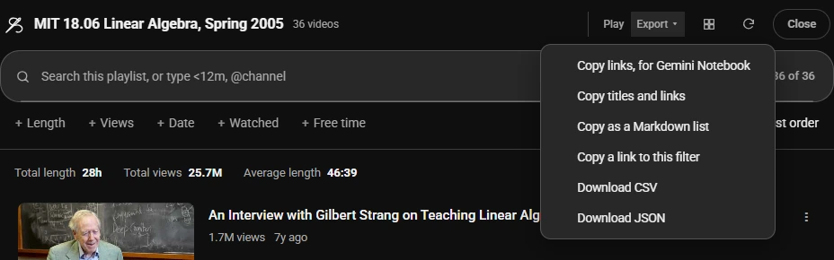

Guide 19·Playlists
How to add a whole YouTube playlist to Gemini Notebook.
Updated 19 November 2026
Short answer
Gemini Notebook, called NotebookLM until July 2026, can't import a playlist. It takes YouTube videos one link at a time, and a playlist's link isn't opened up into its videos. So copy the videos' own links instead: Needle, a free Chrome extension, reads the whole playlist and copies every link in it, one per line, and Gemini Notebook takes several links in a single paste.
01·The problem
A playlist link doesn't work
Gemini Notebook treats each YouTube video as one source. Paste a playlist's address and you don't get its videos: it wants each video's own link. For a 36-lecture course, that's 36 links, copied one at a time from 36 pages.
02·With Needle
Copy every link with Needle
- Open the playlist on YouTube.
- Press the needle button in the bottom right corner, or Alt+Y. Needle reads every video in it.
- Open Export and choose Copy links, for Gemini Notebook.

It copies one link per line and nothing else, for the videos the panel is showing, in the order it's showing them. On that playlist, the clipboard starts:
https://www.youtube.com/watch?v=7UJ4CFRGd-Uhttps://www.youtube.com/watch?v=J7DzL2_Na80https://www.youtube.com/watch?v=QVKj3LADCnA
and runs to 36 lines. The first is an interview about the course rather than a lecture: type -interview in the panel's box before copying and it's left out.
03·Gemini Notebook
Paste them into Gemini Notebook
- Open a notebook in Gemini Notebook, or make a new one.
- Choose Add sources and add a link.
- Paste. Google's help says several links can go in together, separated by a space or a new line.
If a long paste is refused, paste it in smaller lots. Anything it skips is usually one of the cases further down: private, too new, or nothing said in it.
04·Limits
Will the playlist fit?
Count the videos, not the hours. Every video is one source however long it runs, and a free notebook takes 50; paid plans take more (the number for each plan). MIT's 18.06 playlist is 36 lectures and 28 hours of them, and it fits a free notebook with 14 places to spare.
The count above the panel's list is the number to check before you copy. The line just above the videos adds up their total length, if you're curious how much you're asking the notebook to read.
05·Filters
When the playlist is bigger than the notebook
Cut it down in the panel, and copy only what's left. The count above the list says how many that is.
>30m | Only the long ones: full lectures, not trailers |
-trailer | Leave out anything with trailer in the title |
after:2023 | Only the newer ones |
unwatched | Only what you haven't watched yet |
On your own playlists and Watch Later, Select lets you tick videos by hand instead, and Copy links then takes only the ones you picked.
06·What counts
Playlists that work, and ones that don't
Gemini Notebook works from what's said in a video, by way of its captions, so what kind of playlist it is matters more than how long.
- Good fits: people talking. Lecture series, courses, conference talks, podcasts, explainers, interviews.
- Little to read: music playlists, gameplay without commentary, tutorials that are mostly silent screen recording.
- Skipped outright: videos in the list that are private, or too new to be ready yet. What it can and can't read has the details.
07·Lists and search
Watch Later, Liked videos and channels
The same Export is in the panel on Watch Later, Liked videos and your history. For a whole channel, sending a channel to Gemini Notebook covers picking the right videos from hundreds. And to keep a list in a spreadsheet instead, export the playlist to Excel or CSV.
08·Questions
Questions?
Can NotebookLM read a YouTube playlist?
Not from the playlist's link. It reads one video per link, so each video needs its own. Copy them all from the playlist with Needle and paste them in together.
How many videos can I add?
A free notebook holds 50 sources, Google AI Plus 100, Pro 300 and Ultra 500 or 600. Each video is one source, however long it is.
Can I add several YouTube links at once?
Yes. Google's help says links can go in together, separated by a space or a new line. If a long paste is refused, paste it in smaller lots.
My playlist has more videos than my notebook holds.
Filter it in Needle's panel first, by length, views, date or a word in the title, until the count fits, then copy what's left.
Why did some of the playlist not import?
Usually there was nothing for it to read: a private video in the list, one with no captions, or one uploaded in the last few days. Music and silent videos give it almost nothing either.
Does it work on Watch Later and Liked videos?
Yes, and on your own playlists and your history. If the panel says First 100 only, press Read all first so the whole list is read.
Does Needle send anything to Google?
No. It copies the links to your clipboard and you paste them. It has no access to your notebooks, and nothing leaves your browser.
Is it free?
Yes. No account, no trial, no paid tier.